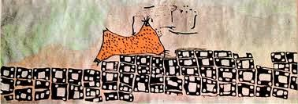

"La cartografía es el lenguaje de los exploradores y el espejo de las culturas."
Laura Sofia Trevejo Paucar
16 de junio de 2025
INTRODUCCIÓN
La cartografía es la disciplina que se encarga de representar gráficamente la Tierra y sus características geográficas, desde montañas y ríos hasta ciudades y fronteras. A través de mapas y planos, los cartógrafos buscan reflejar la complejidad del mundo que nos rodea de manera clara y precisa. Con una rica historia que se remonta a civilizaciones antiguas, la cartografía ha evolucionado significativamente gracias a avances tecnológicos como la geodesia, la fotogrametría y, más recientemente, los sistemas de información geográfica (SIG) y la teledetección.
Los mapas no solo nos ayudan a navegar y entender nuestro entorno, sino que también desempeñan un papel crucial en diversas áreas como la planificación urbana, el estudio del cambio climático, la gestión de recursos naturales y la investigación científica. En la era digital, la cartografía se ha vuelto más accesible y dinámica, permitiendo la creación de mapas interactivos y personalizados que satisfacen las necesidades específicas de cada usuario.
El Mapa de Bedolina es una famosa roca prehistórica grabada que forma parte del complejo de petroglifos del Valle Camonica en Italia. Es conocido como uno de los mapas topográficos más antiguos, una representación de parcelas cultivadas, caminos de montaña y aldeas, y fue realizado entre el 1400 y el 500 a. C.
El mapa de Çatalhöyük fue descubierto en la década de 1960 por el arqueólogo James Mellaart, y se cree que podría haber sido creado con fines rituales o ceremoniales, más que como un simple plano de la ciudad.
La piedra de Saint-Bélec fue descubierta en 1900, pero permaneció almacenada en un museo durante más de un siglo sin ser estudiada a fondo hasta que en 2014 un equipo de investigadores la analizó y descubrió que se trataba de un mapa antiguo.
HISTORIA DE LA CARTOGRAFÍA
La Prehistoria (antes del 3000 a.C.)

La cartografía tiene sus raíces en la prehistoria, cuando los seres humanos comenzaron a representar su entorno en forma de dibujos y símbolos.Los primeros mapas conocidos datan del período Paleolítico Superior, alrededor del 40.000 a.C. Estos mapas primitivos se encontraban en cuevas y rocas, y mostraban animales, humanos y elementos del paisaje.
Algunos ejemplos de estos mapas incluyen:
El mapa de Bedolina data del Paleolítico Superior y muestra un paisaje con figuras humanas y animales.
El mapa de Çatalhöyük data del Neolítico y muestra un plano de la ciudad con casas y calles.
La Cartografía en la Antigüedad Clásica (3000 a.C. - 500 d.C.)
Con el surgimiento de las civilizaciones antiguas, la cartografía se convirtió en una herramienta importante para la navegación, el comercio y la guerra. En Mesopotamia, los sumerios crearon mapas en tablillas de arcilla que mostraban la distribución de tierras y recursos. Algunos ejemplos de estos mapas incluyen:
El mapa de Nippur, encontrado en Irak, que data del período acadio y muestra un plano de la ciudad con templos y canales.
El mapa de Babilonia, encontrado en Irak, que data del período babilónico y muestra un mapa del mundo conocido.
En Egipto, los faraones encargaron mapas para planificar la construcción de pirámides y canales. Los mapas egipcios solían mostrar el río Nilo y sus inundaciones anuales, que eran cruciales para la agricultura.
En Grecia, los filósofos y geógrafos como Eratóstenes y Estrabón desarrollaron teorías sobre la forma de la Tierra y crearon mapas que reflejaban su comprensión del mundo. Eratóstenes, en particular, es famoso por calcular con notable precisión la circunferencia de la Tierra utilizando la sombra de los rayos del sol en diferentes latitudes.
La Cartografía en la Edad Media (500 - 1500 d.C.)
Durante la Edad Media, la cartografía en Europa se centró en la creación de mapas que reflejaban la visión cristiana del mundo. Los mapas "T-O" mostraban el mundo como un círculo dividido en tres partes: Asia, Europa y África. Estos mapas solían incluir elementos bíblicos y simbólicos, y no siempre eran precisos desde un punto de vista geográfico.
Algunos ejemplos de mapas medievales incluyen:
El mapa de Hereford, encontrado en Inglaterra, que data del siglo XIII y muestra un mapa del mundo conocido con elementos bíblicos y simbólicos.
El mapa de Ebstorf, encontrado en Alemania, que data del siglo XIII y muestra un mapa del mundo conocido con elementos bíblicos y simbólicos.
Mientras tanto, en el mundo islámico, los cartógrafos como Al-Idrisi crearon mapas precisos y detallados del mundo conocido. Al-Idrisi trabajó en la corte del rey Roger II de Sicilia y produjo un atlas mundial que incluía mapas de África, Asia y Europa.
La Cartografía en la Era de la Exploración (1500 - 1800 d.C.)
La Era de la Exploración marcó un período de gran avance en la cartografía. Los descubrimientos de nuevos territorios y rutas marítimas llevaron a la creación de mapas más precisos y detallados. Los cartógrafos como Gerardus Mercator y Martin Waldseemüller crearon mapas que reflejaban la nueva comprensión del mundo.
La proyección de Mercator, desarrollada en el siglo XVI, se convirtió en un estándar para la navegación marítima y sigue siendo utilizada hoy en día. Sin embargo, también tiene limitaciones, como la distorsión de las formas y tamaños de los continentes cerca de los polos.
Algunos ejemplos de mapas de la Era de la Exploración incluyen:
El mapa de Waldseemüller, encontrado en Alemania, que data de 1507 y muestra un mapa del mundo conocido con el nombre "América" por primera vez.
El mapa de Mercator, encontrado en Bélgica, que data de 1569 y muestra un mapa del mundo conocido con la proyección de Mercator.
La Cartografía Moderna (1800 - 2000 d.C.)
En el siglo XIX, la cartografía se benefició de avances tecnológicos como la fotografía aérea y la topografía. Los mapas se volvieron más precisos y detallados, y se crearon instituciones cartográficas nacionales para producir y distribuir mapas oficiales.
Algunos ejemplos de mapas modernos incluyen:
El mapa topográfico de Estados Unidos, producido por el Servicio Geológico de Estados Unidos (USGS) en el siglo XIX.
El mapa de la ciudad de París, producido por el Instituto Geográfico Nacional de Francia en el siglo XIX.
En el siglo XX, la cartografía se revolucionó con la llegada de la tecnología digital y los sistemas de información geográfica (SIG). Los SIG permiten la creación de mapas interactivos y personalizados, y han tenido un impacto significativo en campos como la planificación urbana, la gestión de recursos naturales y la investigación científica.
La Cartografía en la Era Digital (2000 d.C. - presente)
En la era digital, la cartografía ha seguido evolucionando con la llegada de tecnologías como la teledetección, el GPS y la cartografía en línea. Los mapas en línea como Google Maps y OpenStreetMap han democratizado el acceso a la cartografía y han permitido a los usuarios crear y compartir sus propios mapas.
La cartografía también se ha vuelto más colaborativa, con proyectos como la cartografía participativa y la cartografía comunitaria. Estos proyectos permiten a las comunidades locales crear mapas que reflejan sus propias necesidades y perspectivas.
Algunos ejemplos de proyectos de cartografía digital incluyen:
El proyecto OpenStreetMap, que permite a los usuarios crear y editar mapas en línea de forma colaborativa.
El proyecto Google Maps, que permite a los usuarios crear y compartir mapas personalizados en línea.
TIPOS DE CARTOGRAFÍA
La cartografía al ser una disciplina que abarca una amplia variedad de técnicas y enfoques para representar el mundo que nos rodea posee diferentes tipos de cartografía que se enfocan en aspectos específicos de la realidad geográfica, desde la forma y características del terreno hasta la distribución de fenómenos sociales y económicos. Cada tipo de cartografía tiene sus propias herramientas y técnicas, y se utiliza para responder a preguntas y necesidades específicas. La elección del tipo de cartografía adecuado depende del propósito y el público objetivo, y puede variar desde la creación de mapas simples hasta la realización de análisis complejos. En general, los tipos de cartografía se pueden clasificar en categorías que reflejan la naturaleza de los datos y la forma en que se representan.
Cartografía Topográfica
La cartografía topográfica se enfoca en la representación detallada de la forma y características del terreno, incluyendo la elevación, la pendiente y la hidrografía. Los mapas topográficos suelen incluir información sobre la vegetación, la geología y la infraestructura, y se utilizan para una variedad de propósitos, desde la planificación urbana hasta la gestión de recursos naturales. La cartografía topográfica es fundamental para entender la forma en que el terreno se comporta y cómo se puede utilizar de manera sostenible.
Los mapas topográficos pueden ser utilizados para identificar áreas de riesgo, como zonas de inundación o deslizamientos de tierra, y para planificar la construcción de infraestructuras como carreteras y puentes. La cartografía topográfica también es importante para la gestión de recursos naturales, como la planificación forestal y la conservación de la biodiversidad. Los mapas topográficos pueden ser creados utilizando una variedad de técnicas, incluyendo la fotogrametría y la teledetección. La precisión y la detalle de los mapas topográficos dependen de la escala y la calidad de los datos utilizados. En general, los mapas topográficos son una herramienta valiosa para cualquier persona que necesite entender la forma y características del terreno.
Cartografía Temática
La cartografía temática se enfoca en la representación de temas específicos, como la población, la economía, el clima o la geología. Los mapas temáticos suelen utilizar símbolos y colores para representar la distribución y la intensidad de los fenómenos estudiados, y se utilizan para analizar y visualizar datos complejos. La cartografía temática es una herramienta valiosa para la investigación científica y la toma de decisiones, ya que permite visualizar patrones y tendencias en los datos. Los mapas temáticos pueden ser utilizados para analizar la distribución de la población, la economía y los recursos naturales, y para identificar áreas de riesgo y oportunidad.
La cartografía temática también es importante para la planificación y la gestión de recursos, ya que puede ser utilizada para evaluar la efectividad de las políticas y programas. Los mapas temáticos pueden ser creados utilizando una variedad de técnicas, incluyendo la estadística y la modelización. La precisión y la detalle de los mapas temáticos dependen de la calidad de los datos utilizados y la habilidad del cartógrafo para representar la información de manera clara y concisa.
Cartografía Digital
La cartografía digital se enfoca en la creación y el análisis de mapas digitales utilizando tecnologías de información geográfica (SIG) y otros software especializados. Los mapas digitales pueden ser interactivos y personalizados, y se utilizan en una variedad de aplicaciones, desde la navegación hasta la planificación urbana y la gestión de recursos naturales. La cartografía digital es una herramienta valiosa para la investigación científica y la toma de decisiones, ya que permite visualizar y analizar datos complejos de manera rápida y eficiente. Los mapas digitales pueden ser utilizados para analizar la forma en que los fenómenos geográficos se distribuyen en el espacio, y para identificar patrones y tendencias en los datos.
La cartografía digital también es importante para la comunicación de información compleja, ya que puede ser utilizada para presentar datos de manera clara y concisa. Los mapas digitales pueden ser creados utilizando una variedad de técnicas, incluyendo la programación y la modelización. La precisión y la detalle de los mapas digitales dependen de la calidad de los datos utilizados y la habilidad del cartógrafo para representar la información de manera clara y concisa.
LOS MAPAS
Los mapas también conocidos como cartas son representaciones gráficas de la realidad geográfica (Tierra) a través de una superficie plana.
Elementos principales
Título
Indica el tema o propósito del mapa a través de palabras
Debe ser conciso pero descriptivo
Ejemplo: Mapa político de América del Norte
Escala
Relación entre las distancias del mapa y la realidad.
Tipos de escalas:
Escala gráfica: representada a través de una barra dividida en segmentos
Escala numérica: Indica cuantas veces se debe de aumentar el mapa para que el dibujo esté a tamaño real.
Se expresa con un número o una fracción.
Ejemplo:
Escala Numérica
Equivalencia en Realidad
Uso Principal
1:100
1 cm = 1 m
Planos arquitectónicos, detalles constructivos
1:1,000
1 cm = 10 m
Catastro urbano, parcelas
1:5,000
1 cm = 50 m
Planificación urbana, infraestructuras
1:25,000
1 cm = 250 m
Mapas topográficos, senderismo
1:50,000
1 cm = 500 m
Cartografía regional, estudios ambientales
Calculadora de Escala de Mapa
Resultado
Simbología o leyenda
La simbología cartográfica es el conjunto de figuras, líneas, puntos y colores utilizados en los mapas para representar diferentes elementos del territorio.
La leyenda del mapa, por otro lado, es el apartado donde se explica el significado de estos símbolos, facilitando su interpretación.
En otras palabras, la simbología hace referencia a los signos en sí, mientras que la leyenda es la clave que permite entenderlos.
Rosa de los vientos
Es un símbolo gráfico circular que tiene marcado alrededor los rumbos en los que se divide la circunferencia del horizonte.
Se utiliza para representar las direcciones geográficas y cardinales en un mapa.
Coordenadas geográficas
Son las líneas horizontales y verticales que se aprecian, y sirven para ubicar cualquier lugar en el mapa al señalar su latitud (líneas horizontales) y longitud (líneas verticales)